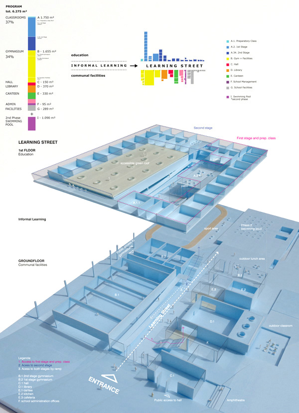

New School Chyne
Competition - Primary School - Chyne - 2015
A Street for Learning
The program of the new school is divided in two levels: the formal learning places are concentrated on the first floor, floating above the communal and shared facilities which are assembled in a ground floor plane embedded in the landscape.
Impregnated with urban qualities, this entrance level functions as an extension of the street, a permeable space to the community, and the space for informal encounters, both educational and social. A true street for learning.

Concentration
Adapted to the local climate, a compact building will enable an important reduction of the external envelope that will translate into significant energy savings during the functioning hours of the building. The compacted program will also strengthen the interaction between the different elements of the school, bringing the students from different years closer together in an integrated learning environment.
Ground Floor
From the entrance, the sports program is organized to the north, and the Multipurpose Hall, Library and Canteen are facing south. All programs can also be accessed directly from the exterior, without disturbing the normal functioning of the school.
The deep floorplan will enjoy plenty of daylight, both from zenithal openings as well as from a series of enclosed courtyards that can be open in summer.
First Floor
The classrooms are organized above, in one level, divided in the middle between 1st Stage and 2nd Stage, with independent access by stairs. Both stages share an accessible ramp that leads also to the roof top garden.
The classrooms for second stage are organized around the gymnasium, and connect directly with its rooftop, a roof garden where the students can learn about natural processes. This roof is a true sustainable feature, and will contribute to the education towards ecological awareness. The natural roofing is maintained by natural processes - a flock of sheep will be able to access from the main ramps, bringing the exterior landscape and ecosystem inside the school.
All classrooms enjoy an ideal solar orientation, the majority facing south and also east. The light inside is also distributed from the corridor, contributing to a diffuse and pleasant interior light, ideal for a healthy learning environment.
Second Phase
The future extension of the school will be located on the east part of the site, and can be accessed both by the exterior, and through an interior passage that links with the gym facilities. The building of the Pool is integrated in the landscape, its grass rooftop will remain invisible from the upper level of the canteen. Daylight will permeate the space through a series of skylights and courtyards.

Team: João Moura Fagulha, Raquel Maria Oliveira, João Prates Ruivo Sustainability consultant: i+i consulting - Isabel Silvestre, Ignacio Medina Renders: Panoptikon -Tudor Vasiliu Client: Municipality of Chyne.